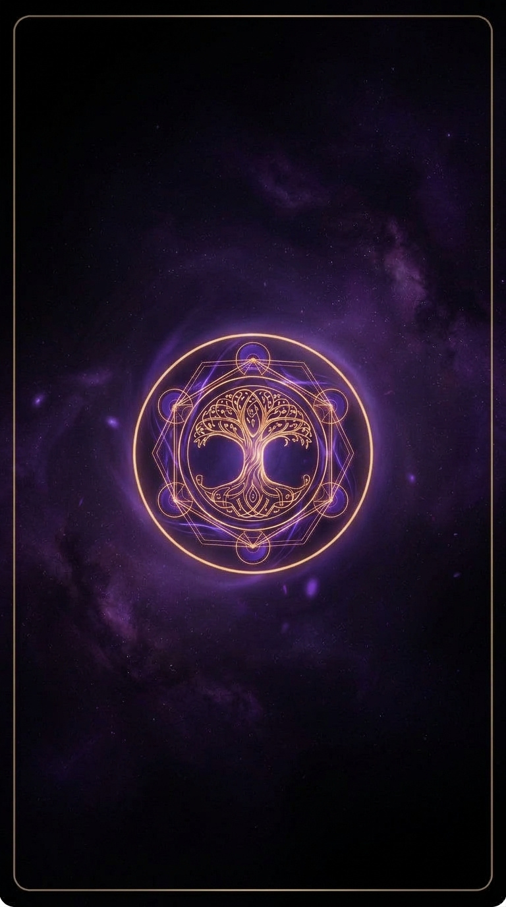

✦ Tarot × Shukuyo ✦
宿曜とタロットで
運命のキャストを占う
あなたの生年月日から導かれるキャラクタータイプと、
1枚のタロットカードを融合した、
今日のあなたへのメッセージ。
※ 入力データはこのブラウザ内でのみ使用され、外部送信されません。
入力情報はLocalStorageにも保存しません。ページを閉じれば消えます。
✦ Draw a Card ✦
1枚、引いてください
心を落ち着けて、
カードに触れてみてください。

✦
Tap the card
✦ Your Reading ✦
あなたへのメッセージ
✦
—
※ 本占いはエンタメ目的のデモ版です。本実装ではキャストとのマッチング、毎日の運勢、ボイスメッセージ等にも対応予定です。